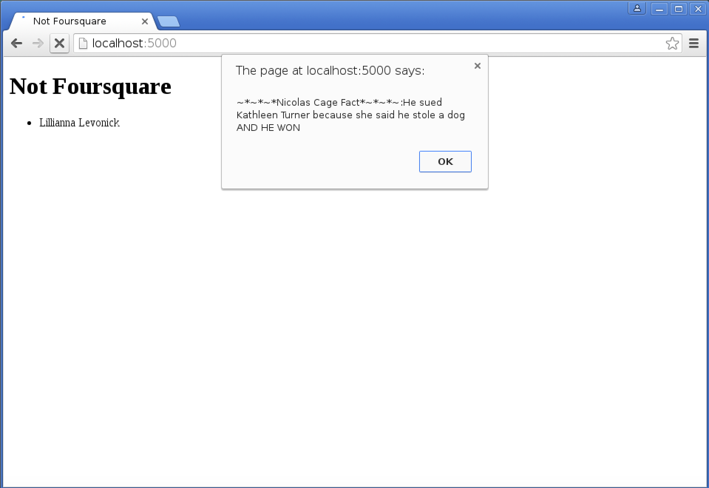
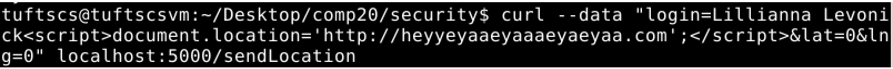

Issue found at vulnerableapp.herokuapp.com/sendLocation
High: This issue allows an attacker to send untrusted data to the database by exploiting the syntax of checking-in on this application. This is an issue because it can allow someone to inject images, other html files, and much more into the login section of the check-in. Although corrupted data can later taken out of the mongodb database this problem can lead to issues like data loss and corruption, justifying its severity level. Also, this level is due to how this issue is easy to exploit and has a severe impact.
By using the command
 I was able to embed a different html file within my local version of the application in the login field. This is what the main page of the application looks like while having this logged as one of the check-ins:
I was able to embed a different html file within my local version of the application in the login field. This is what the main page of the application looks like while having this logged as one of the check-ins:
This check-in data can then be accessed in mongodb and removed if that is desired.

However, if the embedded file were a harmful website then it may already be too late when trying to fix this problem retroactively as users may have already witnessed the harmful content. Also, by using this command I was able to inject an image into the local web application through the login field. The result of this on the main webpage can be seen here:

This poses the same issues as the embedded html file and can be accessed and removed in mongodb in the same fashion.
In order to resolve this issue, untrusted data must be separated from commands and queries. Whitelist input validation can be used where you can define exactly what is authorized, making everything else unauthorized. This way special characters can’t be used in the input.
Issue found at vulnerableapp.herokuapp.com/sendLocation
High: This is a problem similar to that of injection, but instead of putting untrusted data into the application this security problem allows attackers to send text-based attack scripts that will affect Not Foursquare. Corrupted data may also be removed retroactively from the mongodb database; however, before this happens the attacker can perform actions like hijack user sessions or insert hostile content into the application.
In order to take advantage of this security weakness I used the command:

This made an alert window appear on the application when the main page is loaded:

Once the alert window was exited out of then the check-in information appears as normal:
This data can then be accessed in mongodb in order to be removed:
This alert is a nuisance to the user, and if more malicious code were put in place of it the users browser could be in danger of getting hijacked.
This issue can be resolved in the same way as injection with whitelist input validation.
Issue found at vulnerableapp.herokuapp.com/sendLocation
Moderate: This problem can allow attackers to redirect users to any other webpage, including malicious websites. Although this problem will cause a user to be sent to a website that they don’t want to go to, the severity is set to moderate because it is easy to detect, prevent, and fix this issue after it happens. Also, this severity is moderate as the solutions to other issues in this application will make this problem go away.
By utilizing the issue of cross-site scripting in the Not Foursquare application, I ran this command:

This made it so when the user tries to load vunerableapp.herokuapp.com their browser redirects them to a completely different webpage:
This redirect not only means that the user can’t access the actual webpage of the application correctly, but that they may be sent to a malicious website or even fall victim to a phishing attack. This corrupted data can be accessed in mongodb and removed if wanted:
This issue can also be resolved with whitelist input validation, as it stems from the cross-site scripting problem in this application.
Issue found at vulnerableapp.herokuapp.com/checkins.json as well as vulnerableapp.herokuapp.com
Moderate: This issue stems from how an attacker can access sensitive data about a user from this application. Any data that should have been protected then becomes compromised due to this problem. The severity of this issue is moderate as it would be difficult for an attacker to exploit these issues.
Part of this issue is that on the main application website you are able to see a person’s exact latitude and longitude at a given time of day.
This is a privacy issue because it can tell attackers the exact location of a user without them even having to do anything! This kind of issue is also prevalent in check-in features that Facebook has: http://www.wafb.com/story/14603770/hidden-dangers-from-checking-in-on-facebook
An attacker can also utilize the vunerableapp.herokuapp.com/checkins.json page in order to get sensitive information about the user. This is because if they add the right query to this address all the data about a user’s check-in will pop-up. For instance when I type this into a search bar:
This is what appears:
This means that I can now also access the _id value of the data which was not shown on the main page of the website.
To resolve this issue cryptography can be employed in order to encode sensitive data in the mongodb database, so even if accessed the attacker can’t use the information for their own purposes. Also, restricting who is able to see a user’s check-in on the main application page may solve some of the privacy issues of anybody online being capable of seeing it.
Issue found at vulnerableapp.herokuapp.com/sendLocation
High: This issue allows attackers to send an XHR request to Not Foursquare with any website due to the enabling of CORS. The problem poses a high security risk as any site can then make a request to Not Foursqaure on behalf of their users and then process the response.
An attacker is able to post a check-in and add it to the application’s database through any html page that has an XHR post request for vunerableapp.herokuapp.com/sendLocation because of this problem. To demonstrate this issue I wrote a simple html file that would do this to my local version of Not Foursquare:
When opened this html file has no text or images but it was successful in putting a new check-in into my local version of the application due to the
request.sendcommand:The website I created was able to do this because of this code in the application's server:
The resolution to this issue is to use an origin header file in order to tell the server what the regular XHR requests are going to be.